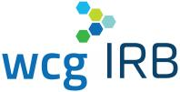
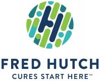
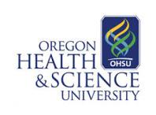

Member Center
NWABR's members - institutions and individual supporters - constitute a select community of leaders across the Northwest who embrace our mission of promoting the public's trust in biomedical research and its ethical conduct. Our members share in the effort to engage in dialogue about complex ethical questions related to the biomedical sciences. Through a series of educational programs we work together with the research community to communicate about the role of biomedical research in society, and we help our members navigate the regulatory frameworks that govern research through Institutional Review Board Conferences (IRBs), Institutional Animal Care and Use Committee Conferences (IACUCs) and Institutional Biosafety Committes (IBCs).
Platinum Members
The University of Washington, or "Udub," is a public research university in Seattle, WA. As the state's flagship university, it serves more than 92,000 students a year and confers greater than 12,000 bachelors, masters, doctoral, and profressional degrees annually. UW has campuses in Seattle, Tacoma, and Bothell, as well as a world-class academic medical center.

WCG IRB provides the highest quality ethical reviews of clinical research protocols and studies. WCG IRB has more than 50 years’ experience and more than 200 members on AAHRPP-accredited boards. Since 2000, WCG IRB has also provided IBC administration and review services to nearly 800 institutions and evaluated more than 400 human gene transfer protocols.

Advarra advances the way clinical research is conducted: bringing life sciences companies, CROs, research sites, investigators, and academia together at the intersection of safety, technology, and collaboration. Advarra is advancing clinical trials to make them safer, smarter, and faster.
_Feb2021.png)
Gold Members
The world-renowned FHCRC hosts interdisciplinary research projects aimed at the elimination of cancer and related diseases as the cause of human suffering and death. It is home to three Nobel Prize Laureates in Physiology or Medicine.

OHSU is the only public university and academic health center in Oregon. Biomedical researchers, medical students, and clinicians collaborate for local and global healthcare improvement.

The Providence family of organizations is dedicated to creating health care access for everyone and improving the health of our communities. Providence’s 120,000 caregivers (all employees) serve in 51 hospitals, 1,085 clinics and a comprehensive range of health and social services across Alaska, California, Montana, New Mexico, Oregon, Texas and Washington. The Providence Research Network (PRN) uses science to personalize care and empower patients to live their best lives.